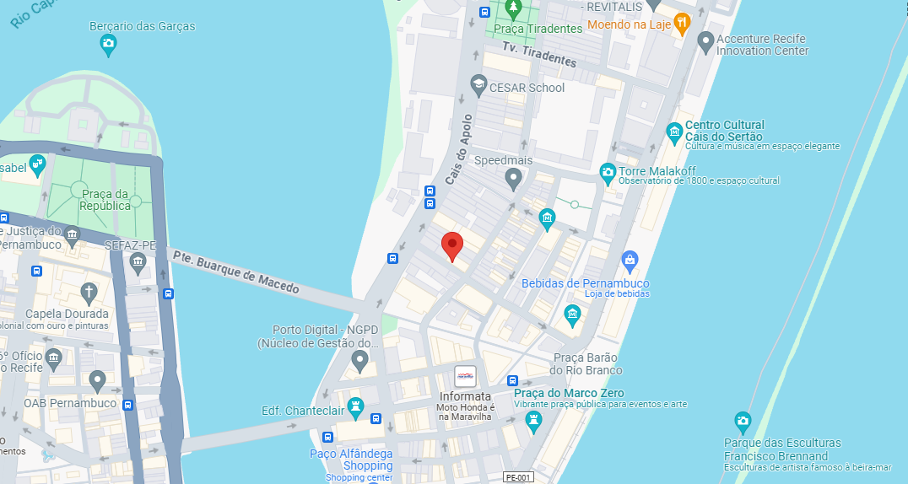

Polo Marco Zero
No coração do Recife, o polo do Marco Zero é um dos principais pontos do Carnaval do Recife
ATRAÇÕES SEXTA-FEIRA
-
16h – Campeãs do carnaval de 2020: BCM Amante das Flores, Boi Maracatu de Arcoverde, Caboclinho Kapinawá,
CCM das Pás, Clube de Boneco O Menino do Pátio de São Pedro, Escola de Samba Galeria do Ritmo,
Maracatu de Baque Solto Estrela Dourada de Buenos Aires,
Maracatu Nação Porto Rico, Tribo de Índios Tabajaras de Goiana, TCM Abanadores do Arruda, Urso Cangaçá de Água Fria;
-
19h – Homenageados do carnaval 2023: Geraldo Azevedo, Dona Marivalda e Zenaide Bezerra;
-
19h20 – Maestro Forró e Orquestra da Bomba do Hemetério;
-
20h40 – Geraldo Azevedo recebe Alceu Valença, Fafá de Bélem, Elba Ramalho, Chico César,
Mariana Aydar, Juliana Linhares, Lula ;Queiroga,
Jorge Du Peixe, Jota Michilles, Quinteto Violado, Almério, Silvério Pessoa e Orquestra Transversal;
-
22h20 – Caetano Veloso;
-
00h – Duda Beat.
17/02 - Sexta-feira
16:00
Marco Zero
Localização
